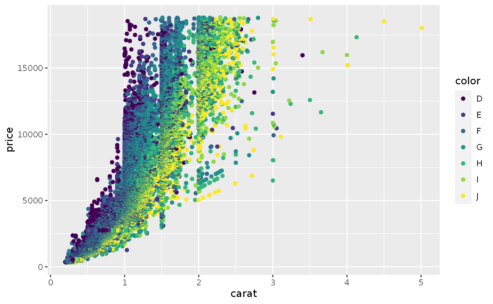
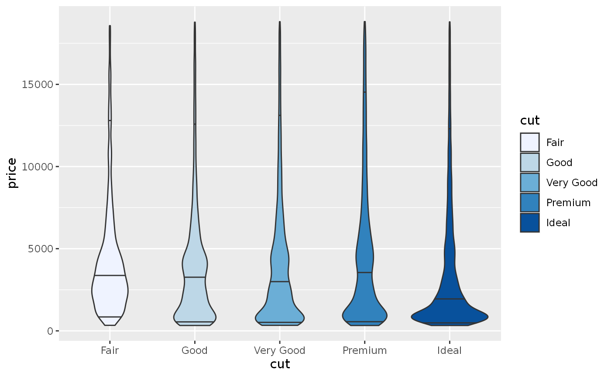

using-roogledocs.RmdPrior to doing any analysis we may have some form of template
J = roogledocs::JavaApi$new() ## Initialising R wrapper for Googledocs java library ## Version: 0.01 ## Generated: 2022-04-27T17:15:23.448 ## Adding to classpath: /media/data/Git/roogledocs/r-library/inst/java/roogledocs-0.0.3-SNAPSHOT-jar-with-dependencies.jar ## 2022-04-27 17:15:30,385 INFO roogledocs [main] Initialised roogledocs options('roogledocs.disabled'=FALSE) doc = J$RoogleDocs$new() ## 2022-04-27 17:15:30,393 INFO org.github.terminological.roogledocs.RService [main] Initialising RoogleDocs. Local token directory: /home/terminological/.roogledocs
doc$deleteDocument("roogledocs-demo",TRUE) ## 2022-04-27 17:15:31,697 INFO org.github.terminological.roogledocs.RService [main] Deleting file: roogledocs-demo doc$findOrCloneTemplate("roogledocs-demo","https://docs.google.com/document/d/1R8SuJI5uJwoMGBHGMaCdRH6i9R39DPQdcAdAF4BWZ20/edit?usp=sharing") ## 2022-04-27 17:15:35,570 INFO org.github.terminological.roogledocs.RService [main] Created new document with title: roogledocs-demo doc$saveAsPdf(here::here("docs/articles/example-template-doc.pdf"))
This example demonstrates a template.
hux = diamonds %>% mutate(colorCat = ifelse(color <= "G", "D-G","G-J")) %>% group_by(cut,colorCat) %>% summarise( `Size (mean + sd)` = sprintf("%1.2f \u00B1 %1.2f",mean(carat),sd(carat)), `Cost (mean + sd)` = sprintf("%1.0f \u00B1 %1.0f",mean(price),sd(price)) ) %>% huxtable::as_hux() %>% huxtable::theme_article() %>% huxtable::merge_repeated_rows() ## `summarise()` has grouped output by 'cut'. You can override using the `.groups` argument. hux %>% roogledocs::as.long_format_table() %>% doc$updateTable(tableIndex = 1,tableWidthInches = 4) ## Table 1 updated hux
| cut | colorCat | Size (mean + sd) | Cost (mean + sd) |
|---|---|---|---|
| Fair | D-G | 0.93 ± 0.43 | 3997 ± 3312 |
| G-J | 1.24 ± 0.58 | 4972 ± 3873 | |
| Good | D-G | 0.78 ± 0.39 | 3620 ± 3380 |
| G-J | 1.00 ± 0.54 | 4610 ± 4194 | |
| Very Good | D-G | 0.72 ± 0.39 | 3587 ± 3666 |
| G-J | 1.00 ± 0.54 | 4873 ± 4358 | |
| Premium | D-G | 0.79 ± 0.44 | 4060 ± 4044 |
| G-J | 1.11 ± 0.59 | 5633 ± 4732 | |
| Ideal | D-G | 0.63 ± 0.36 | 3151 ± 3562 |
| G-J | 0.88 ± 0.53 | 4233 ± 4273 |
g = ggplot(diamonds, aes(x=carat,y=price, colour=color))+geom_point() filename = tempfile(fileext = ".png") ggsave(filename, g, width=6, height=3) filename %>% doc$updateFigure(figureIndex = 1) ## 2022-04-27 17:15:40,559 INFO org.github.terminological.roogledocs.RService [main] Uploading: file3d5810fd36c7.png; with type: image/png ## Figure 1 updated ## 2022-04-27 17:15:45,903 INFO org.github.terminological.roogledocs.RService [main] Deleting file: file3d5810fd36c7.png g

g2 = ggplot(diamonds, aes(x=cut,y=price, fill=cut))+geom_violin(draw_quantiles = c(0.95,0.5,0.05))+scale_fill_brewer() filename = tempfile(fileext = ".png") ggsave(filename, g2, width=4, height=3) filename %>% doc$updateFigure(figureIndex = 2) ## 2022-04-27 17:15:49,118 INFO org.github.terminological.roogledocs.RService [main] Uploading: file3d5818074bf2.png; with type: image/png ## Figure 2 updated ## 2022-04-27 17:15:53,933 INFO org.github.terminological.roogledocs.RService [main] Deleting file: file3d5818074bf2.png g2
 # Updating tagged text
doc$tagsDefined()
| tag | count |
|---|---|
| table-1-update-date | 1 |
| diamonds-mean-sd | 2 |
format(Sys.Date(),"%d/%m/%Y") %>% doc$updateTaggedText(tagName = "table-1-update-date") ## 2022-04-27 17:15:55,919 INFO org.github.terminological.roogledocs.RDocument [main] Autotext replacing: {{table-1-update-date}} with 27/04/2022 ## Text table-1-update-date updated sprintf("%1.1f \u00B1 %1.1f",mean(diamonds$price),sd(diamonds$price)) %>% doc$updateTaggedText(tagName = "diamonds-mean-sd") ## 2022-04-27 17:15:57,031 INFO org.github.terminological.roogledocs.RDocument [main] Autotext replacing: {{diamonds-mean-sd}} with 3932.8 ± 3989.4 ## Text diamonds-mean-sd updated
doc$saveAsPdf(here::here("docs/articles/example-after-update.pdf"))
After the analysis has run we have a new version of the google document which looks like this.